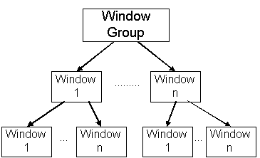

|
| |
In a running application, all window instances are arranged in a hierarchy, illustrated in the diagram below, in which each window has a parent window. THe window server has a window not owned by the client call the "root" window which is the parent of all the group windows.
The diagram shows the relationship between parent and child windows, and window groups, at run-time. Arrows indicate "is a parent of".

The relationship between parent and child windows has the following properties:
A window's parent is specified when the window is created.
The window server imposes no limit to the number of children a window can have: the number of children is limited only by the resources of the system.
When a parent window is destroyed all it's children will be removed from the screen. The the objects associated with them will not be destroyed until the windows or the client owning them is destroyed.
A window's parent defines the region in which the window can be displayed: a child cannot be displayed outside its parent, and is clipped to the parent’s visible region. If a child window is moved so that part of it extends beyond its parent, that part of the child window will not be visible.
Note that if a window's parent is a window group, the window can be displayed anywhere on the screen, because window groups do not have a size.
|
If a window has multiple children, these are known as siblings. Sibling windows are maintained in a list, and the parent window owns a link to the first window in the sibling list. The order of the windows in the sibling list represents the windows’ ordinal position which determines which windows are displayed on top of which, if they overlap.
Copyright ©2002 Symbian Ltd. 6.1-00174 |
|